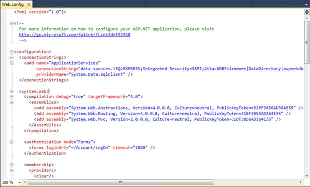

To add codes to the Web.config file:
1. On the Solution Explorer, double-click the Web.config file. (There will be two Web.config files. Refer to the one in the root folder.)
 Note: The Web.config page appears.
Note: The Web.config page appears.

Figure 21: Web.config Page
2. Add the following assemblies in the Web.config page under the <compilation> tag: Syncfusion.Core, Syncfusion.Schedule.Mvc, Syncfusion.Linq.Base, and Syncfusion.Shared.Mvc.
|
[Webconfig.XML]
<system.web> <compilation debug="true" targetFramework="4.0"> <assemblies> ………… ………… <add assembly="Syncfusion.Core, Version=x.x.x.x, Culture=neutral, PublicKeyToken=632609b4d040f6b4"/> <add assembly="Syncfusion.Linq.Base, Version=x.x.x.x, Culture=neutral, PublicKeyToken=3d67ed1f87d44c89"/> <add assembly="Syncfusion.Shared.Mvc, Version=x.x.x.x, Culture=neutral, PublicKeyToken=3d67ed1f87d44c89"/> <add assembly="Syncfusion.Diagram.Mvc, Version=x.x.x.x, Culture=neutral, PublicKeyToken=3d67ed1f87d44c89"/> </assemblies> </compilation> </system.web>
|
Note: X.X.X.X in the above code corresponds to the
current version number of Essential Studio that you are currently
using.
3. Add the Syncfusion.Mvc.Schedule, Syncfusion.Mvc.Shared, and Syncfusion.Mvc.Tools namespaces under the <namespaces> tag.
|
[Webconfig.xml]
<system.web> <pages> <namespaces> ………. ………. <add namespace="Syncfusion.Mvc.Shared"/> <add namespace="Syncfusion.Mvc.Diagram"/> </namespaces> </pages> </system.web>
|
4. Register the handlers under <httphandlers> and <handlers> tags in the Web.config file by using the following code.
|
[Webconfig.xml]
<system.web> ……….. ……….. <httpHandlers> <add verb="GET,HEAD" path="MvcResourceHandler.axd" type="Syncfusion.Mvc.Shared.MvcResourceHandler, Syncfusion.Shared.Mvc, Version=x.x.x.x, Culture=neutral, PublicKeyToken=3d67ed1f87d44c89" validate="false"/> </httpHandlers> </system.web>
…….. <system.webServer> ……. ……. <handlers> <remove name="MvcResourceHandler"/> <add verb="GET,HEAD" name="MvcResourceHandler" path="MvcResourceHandler.axd" type="Syncfusion.Mvc.Shared.MvcResourceHandler, Syncfusion.Shared.Mvc, Version=x.x.x.x, Culture=neutral, PublicKeyToken=3d67ed1f87d44c89"/> </handlers> </system.webServer>
|
 Note:
Note:
· VS2010 automatically registers all ASP.NET handlers inside the machine.config file. So add the <httpHandlers> and <handlers> tags under <system.web> and <system.webServer> respectively in the web.config file. For more information, refer to Clean Web.Config Files (VS 2010 and .NET 4.0 Series)
· X.X.X.X in the above code corresponds to the correct version number of the Essential Studio version that you are currently using.